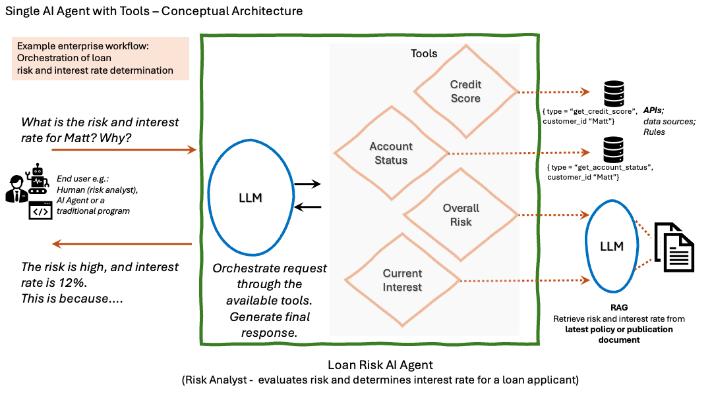
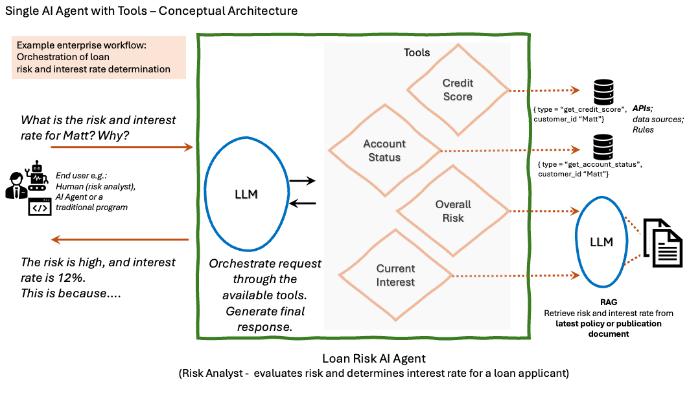

Suggested questions for Loan Risk - AI Agent
You’re a loan risk analyst who uses the Loan Risk AI Agent to assess risks.
You have customers with varying credit scores and account statuses applying for loans.
Here are some suggested questions.
> What can you do for me?
> What can you do for me? how?
> What is the risk for loren?
> What is the risk for loren? why?
> What is the interest rate for matt?
> What is the interest rate for matt? Explain how it was determined?
> What is the interest rate for matt? why? how do you decide?
> What is the credit score for hilda?
> What is the credit score and account status for hilda and matt?
> What is the interest rate for credit score 655 and account status closed? why?
> What is the risk with credit score 825 but account status delinquent? why?
> What is the interest rate for low to medium risk?
> What is the interest rate for low to medium risk? why?
> How do you determine the interest rate from overall risk? Explain.
Try other related questions and share your experience.
Conceptual Architecture: 
Content used for Agentic RAG:
> What can you do for me?
> What can you do for me? how?
> What is the risk for loren?
> What is the risk for loren? why?
> What is the interest rate for matt?
> What is the interest rate for matt? Explain how it was determined?
> What is the interest rate for matt? why? how do you decide?
> What is the credit score for hilda?
> What is the credit score and account status for hilda and matt?
> What is the interest rate for credit score 655 and account status closed? why?
> What is the risk with credit score 825 but account status delinquent? why?
> What is the interest rate for low to medium risk?
> What is the interest rate for low to medium risk? why?
> How do you determine the interest rate from overall risk? Explain.
Try other related questions and share your experience.
Conceptual Architecture: 
Content used for Agentic RAG:
Bank Loan Overall Risk Policy PDF.
Bank Loan Interest Rate Policy PDF.